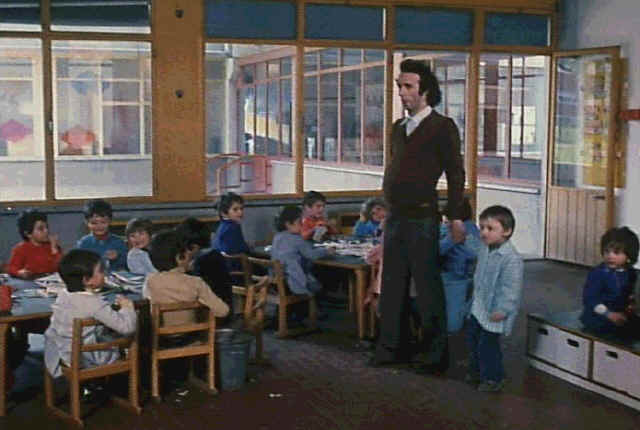

Seeking Asylum/C,C-
|
Image/1972/110m/Cropped
1.33 |
Roberto becomes a pre-school teacher and brings his unusual point of view to
the classroom. How he gets a way with acts bordering on insanely irresponsible is beyond
my comprehension and beyond the logic of the movie. Directed by Marco Ferreri and written by Ferreri,
Gerard Brach and Roberto Benigni, who also stars, many scenes appear improvised. While
they are fresh and often innocent, they are also ragged and less engaging dramatically
than they might have been.
Visually, the movie picks up significantly when it leaves the
city for the shores of Sardinia, but that section is all too brief. While the major crisis
of the film resolves itself with predictability, the filmmakers have decide to move in a
mystical direction beyond my ken. Symbolism needs solid structure and Seeking Asylum
has little of that.
 |
Benigni teaches the kids about
pregnancyt©Image |
Don't expect the manic
performance Benigni worshippers love. Roberto is rather reserved(for Roberto)in Seeking
Asylum. I think it may have be related to playing with all the young children. An out
of control Benigni may have may have made it impossible to work with all those young
children. Benigni is almost always charming, but I miss the explosion of energy that
imbued Johnny Steccino and Life is Beautiful with a unique comic excitement.
I am one of the worshippers that enjoy to watch Benigni going through the paces of his
profession and even in this strange brew, Benigni is pleasing. It's always great to see
him leap over his girlfriend to the far side of the bed with the grace of the great
clowns.
There is some very questionable subject matter contained in Seeking
Asylum. In a country where kidnapping has been a major problem, Roberto charms his
pupils away from parents and safe haven with all too cavalier an attitude.
Presented with very slight letterbox bands, the film is obviously
cropped from 1.66 elements compromising a number of scenes that might have otherwise
played differently. Horizontal pans are riddled with jumpiness, though this stems from the
transfer elements since the yellow English subtitles are rock steady. Heavy grain in the
earliest scenes suggests this will be tough viewing, but other than a slight jitter in the
grainier scenes, it's not too bad. Color is acceptable. Contrast seems slightly blown out
washing out detail. In darker scenes, brightness levels are sometimes marginal. At least
the DVD does not have an overenhanced digital look. That's a saver! The sound is thin but
acceptable.
.
|
|
Home Theater Reference System
Laser discs and DVDs are evaluated on the
following current home theater equipment: Stewart 6' x 11' Videomatte 1.33
Gain Screen, 2 Runco 980 Ultra Projectors stacked, Faroudja LD100 Line Doubler, Lexicon
DC1 Surround Processor/Switcher, 2 Pioneeer Elite CLD-97 Laser Disc Players with AC-3
Modification, Sony 7000 DVD Player, Toshiba SD-3006 DVD Player, Total Media Systems
Reference Home Theater Suite, LR Fronts, Center, LR Sides, LR Rears, 2 Velodyne F1500R
Subwoofers, Sunfire Cinema Grand5 Channel Amp, Sunfire 2 Channel Amp, Lexicon RF
Demodulator, Lexicon T-500 System Remote Control, Speaker Wire and Interconnects by
Straight Wire.
|
HOT LINKS
The American Widescreen Museum
The wealth of information about widescreen movies is presented in a intelligent and
easy to understand interface. Color in movies is given a similar treatment. |
|

Robert Harris is part
of the dynamic duo that restored Lawrence of Arabia, Spartacus, My Fair Lady and Vertigo.
Harris rides a white horse into the battle to preserve our film legacy. Click on the
image to read more.
|
Check out the Movie Poster Archive
for short bios and images of Susan Hayward, Kirk Douglas, Katharine Hepburn and many more.
This month's featured star is John Wayne. The Feature Archive has articles
ranging from Akira
Kurosawa to Blonde
Bimbos and John
Ford.

Click on the image of The
Heistmasters for an interesting feature on the tough guys that pull off the
big jobs.
|
|